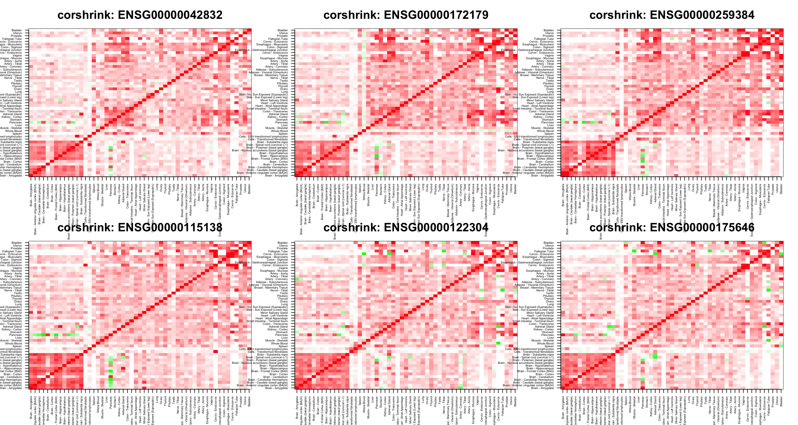

Last updated: 2017-05-28
Code version: b5ed7ab
How do the genes from the GTEx clusters obtained through CountClust look like in terms of CorShrink output.
cor_result <- get(load("../output/genewide_ash_out_tissue_mat.rda"))
common_samples <- get(load("../output/common_samples.rda"))
tissue_labels <- read.table(file = "../data/GTEX_V6/samples_id.txt")[,3]
#library(data.table)
#data <- data.frame(fread("../data/GTEX_V6/cis_gene_expression.txt"))
#matdata <- t(data[,-c(1,2)])
gene_names <- as.character(read.table(file = "../data/GTEX_V6/gene_names_GTEX_V6.txt")[,1])
gene_names_1 <- as.character(sapply(gene_names, function(x) return(strsplit(x, "[.]")[[1]][1])))
U <- unique(tissue_labels)library(CorShrink)
source("../../CorShrink/R/CorShrinkML.R")for(k in 1:20){
genes <- as.character(read.table(paste0("../utilities/gene_names_clus_", k, ".txt"))[1:6,1])
par(mfrow=c(2,3))
for(l in 1:length(genes)){
col=c(rev(rgb(seq(1,0,length=1000),1,seq(1,0,length=1000))),
rgb(1,seq(1,0,length=1000),seq(1,0,length=1000)))
image(as.matrix(cor_result[order_index,order_index,grep(paste0(genes[l]),gene_names_1)]),
col=col, main=paste0("corshrink: ", genes[l]), cex.main=2,
xaxt = "n", yaxt = "n", zlim=c(-1,1))
axis(1, at = seq(0, 1, length.out = ncol(cor_result[,,1])), labels = U[order_index], las=2, cex.axis = 0.5)
axis(2, at = seq(0, 1, length.out = ncol(cor_result[,,1])), labels = U[order_index], las=2, cex.axis = 0.5)
}
}
for(k in 1:6){
genes <- as.character(read.table(paste0("../utilities/gene_names_brain_clus_", k, ".txt"))[1:6,1])
par(mfrow=c(2,3))
for(l in 1:length(genes)){
col=c(rev(rgb(seq(1,0,length=1000),1,seq(1,0,length=1000))),
rgb(1,seq(1,0,length=1000),seq(1,0,length=1000)))
image(as.matrix(cor_result[order_index[1:13],order_index[1:13],grep(paste0(genes[l]),gene_names_1)]),
col=col, main=paste0("corshrink: ", genes[l]), cex.main=2,
xaxt = "n", yaxt = "n", zlim=c(-1,1))
axis(1, at = seq(0, 1, length.out = 13), labels = U[order_index[1:13]], las=2, cex.axis = 1)
axis(2, at = seq(0, 1, length.out = 13), labels = U[order_index[1:13]], las=2, cex.axis = 1)
}
}sessionInfo()R version 3.3.3 (2017-03-06)
Platform: x86_64-apple-darwin13.4.0 (64-bit)
Running under: macOS Sierra 10.12
locale:
[1] en_US.UTF-8/en_US.UTF-8/en_US.UTF-8/C/en_US.UTF-8/en_US.UTF-8
attached base packages:
[1] stats graphics grDevices utils datasets methods base
other attached packages:
[1] CorShrink_0.99.0
loaded via a namespace (and not attached):
[1] Rcpp_0.12.11 knitr_1.15.1 magrittr_1.5
[4] MASS_7.3-45 doParallel_1.0.10 pscl_1.4.9
[7] SQUAREM_2016.8-2 lattice_0.20-35 foreach_1.4.3
[10] plyr_1.8.4 ashr_2.1-15 stringr_1.2.0
[13] tools_3.3.3 parallel_3.3.3 grid_3.3.3
[16] git2r_0.18.0 htmltools_0.3.6 iterators_1.0.8
[19] yaml_2.1.14 rprojroot_1.2 digest_0.6.12
[22] Matrix_1.2-8 reshape2_1.4.2.9000 codetools_0.2-15
[25] evaluate_0.10 rmarkdown_1.5 stringi_1.1.5
[28] backports_1.0.5 expm_0.999-2 truncnorm_1.0-7 This R Markdown site was created with workflowr